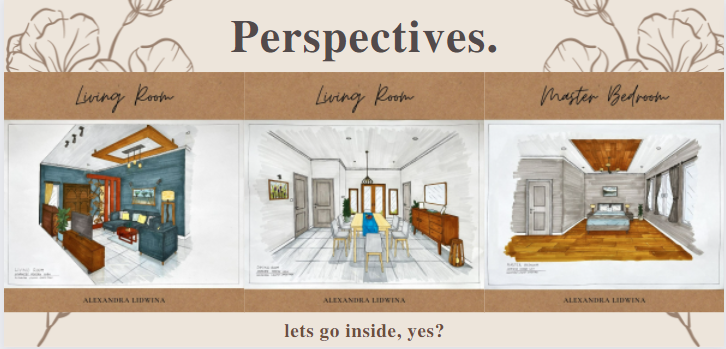
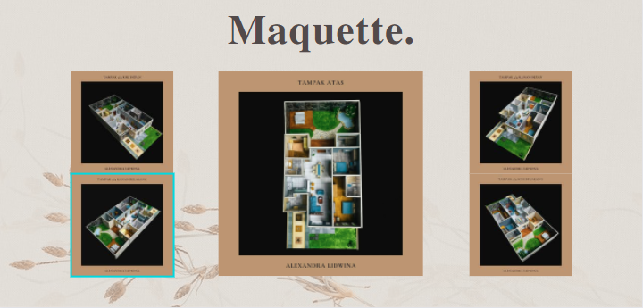

Residential Javanese Modern Lush
Javanese Modern Lush, this design applies west Javanese local content such as using batik Mega Mendung motive in the partition and lamp shade. Based on the theme, the interior is made to be more modern and lush with geometric shapes, minimalist furniture, open space, ornamental plants, and natural stone.
